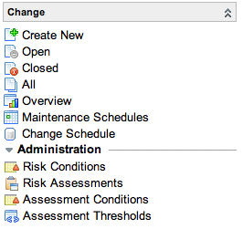

Using Change Risk Assessment
| |
Note: This article applies to Fuji and earlier releases. For more current information, see Risk Calculation and Risk Assessment at http://docs.servicenow.com
The ServiceNow Wiki is no longer being updated. Visit http://docs.servicenow.com for the latest product documentation. |
Contents
1 Overview
Change Management Risk Assessment provides a flexible way to capture information from the end user, in order to derive the risk of the associated change. Libraries of questions can be used to derive the risk of a change based on criteria contained within the change record. For example, a different set of questions could be set for a hardware change versus a software change.
The assessment uses a weighted score approach for each question. The overall score for an assessment is evaluated against thresholds to determine the risk of the change.
2 Activating Change Management Risk Assessment
| Click the plus to expand instructions for activating a plugin. |
|---|
|
If you have the admin role, use the following steps to activate the plugin.
|
2.1 Dependencies
The following plugins are activated with Change Management Risk Assessment:
- Assessment Components
- Best Practice - Change Risk Calculator
- Best Practice - Task Survey Management
3 Applications and Modules
Change Management Risk Assessment adds the following modules to the Change application.
|  |
|
{kind=link}
4 Installed with Change Management Risk Assessment
4.1 Demo Data
These risk assessments are provided as demo data:
- Hardware Risk Assessment
- Software Risk Assessment
5 Defining Risk Assessment
A risk assessment presents the user with a series of questions to determine risk. The composite weighted score that is derived from the user's answers is used to calculate risk, based on the thresholds associated to the risk assessment.
To define a new risk assessment, navigate to Change > Risk Assessment and click New. Populate the following fields:
Field Input Value Name A name for the risk assessment, which will be displayed to the user. Introduction If desired, an introduction for the user.
The Assessment Questions related list determines what questions the user will answer.
Field Input Value Question The question asked of the user. 
Note: Mandatory choice list questions are not supported, use a select list instead. Weight Determines the weighting applied to each question. This will be multiplied by the score of the answer to calculate the weighted score. Related List: Assessment Questions > Assessment Question Choices Order Determines where in the question the choices will be displayed. Ordered from lowest order to highest. Value The choice as presented to the user. Score The score of the choice.
The Assessment Thresholds related list determines the risk that will be set depending on the calculated composite score for any assessment that is taken. The composite score is the sum of all weighted scores for the assessment. Take care to ensure that the thresholds are set correctly based on the questions and answer combinations.
Field Input Value Score Greater Than If the score totalled from all of the user's answers is greater than this number, the risk in the Risk field will be applied to the change. Risk The risk to apply if the threshold is met.
The Assessment Conditions related list determines which risk assessment is attached to each change. When the system evaluates which assessment to attach, it uses the first matching one. When defining multiple questionnaires, take care to ensure that the conditions result in the correct assessments being attached. Keep the conditions simple and mutually exclusive to make this easier to understand and maintain.
If a default questionnaire is required, simply add a condition record with no conditions and set the order to a suitably high number to ensure that other conditions will be evaluated first.
Field Input Value Active If the check box is selected, this condition will be evaluated. Condition A condition builder field to determine what changes will use this Risk Assessment. Description A description of this condition. Order If multiple conditions apply, the risk assessment with the lowest order will be used. Table The table on which the risk assessment will be run. Note: if this risk assessment is being used on the Change table, the table needs to be Change [change_request].
6 Assessing Risk
Once risk assessments are defined, an ITIL user can assess risk.
- On any submitted change form, click the Fill Out Risk Assessment related link:
- The ITIL user is presented with the most appropriate risk assessment, based on the definition. Complete the risk assessment.
- When the risk assessment is complete, click the Execute Risk Calculation related link to calculate the risk based on the assessment:
- When the form reloads, information messages at the top describe the results of the calculation:
6.1 Viewing Risk Assessment Responses
To view the assessment responses, administrators can add the Task Assessment > Task related list to the Change Request form. The related list displays risk assessments associated with the change request. Click the reference icon for an assessment to view the responses.
Alternatively, administrators or users with the survey_admin or survey_reader role can view responses in the Survey application:
- Navigate to Survey > Survey Responses.
- Filter the list accordingly to view the responses you want to see.
- You may want to filter by Instance. Survey instances are individual assessments and are distinguished by the date and time at which they are taken.
7 Using Risk Assessment and Risk Calculation
There are two methods within ServiceNow to calculate the risk of a change: Change Risk Calculator (activated by default) and Change Management Risk Assessment (an optional plugin).
- Change Management Risk Assessment uses information provided by the end user to assess a risk value.
- Change Risk Calculation uses predefined properties and conditions to calculate a risk value.
These methods can be used individually, or together, depending on your own procedures and requirements. If both methods are used together, the highest risk value from both methods is always selected:
Note: If you have both Risk Assessment and Risk Calculation active, but only wish to use one of these methods, then simply remove all conditions for the method you do not want to use.
{kind=link}
{kind=link}
{kind=link}
{kind=link}
{kind=link}